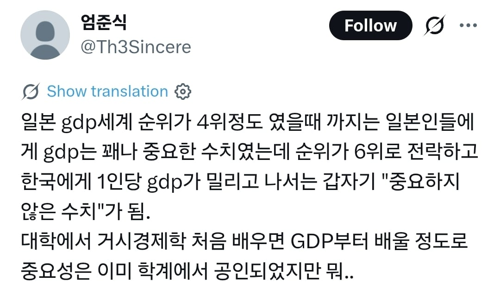
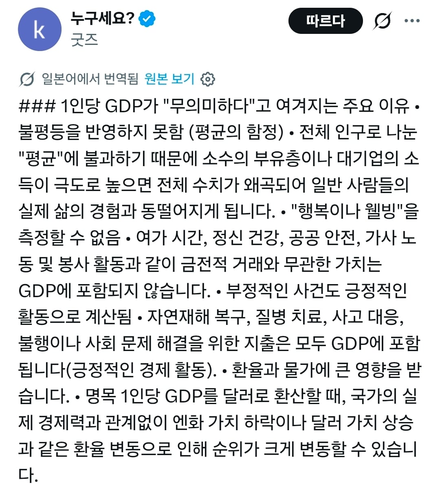

GDP는 취준생 대학 간판 및 학점 같은거임
모든것을 알수 없고 허점이 있지만
얘만큼 파악하기 용이한것도 없음
존나 거시적인 지표이니 미시적인 부분은 설명 못하지. GDP 만큼 많은 것을 설명해주는 숫자도 없음.
행복이나 웰빙을 측정할수없음은 너무 추한 변명같다생각
근데 일본은 버블때뿌린 해외투자금만으로 1년에 400조를 번다고 하는거 같던데 왜캐 일본인들은 소비력이 떨어지는거 같냐
해외 투자를 일반인들이 한게 아니니까
그돈이 고령화로 힘든 일본사회를 뒷받침 해주고 있는거니까..
드디어 일본도 정신승리의 영역으로...
정신승리가 아니라 부자나라 가난한 국민을 까는거같은데
그냥 정신 승리자나
졸렵잽 초식 또나오네
맞지 않음? 대만 보면 GDP 존나 높은데 평범한 시민들 월급은 한국의 절반이잖아.
나도 일케생각함. GDP 높아졌다 지랄지랄해도 체감 하나도 안됨
그러다가 커뮤에서 한국 GDP 4만달러인데 나 4만달러 언제줌? 하는 글 보고 깨달음
학자들이 쓰시는건 좋은데 경제지표로 일반인들한테 쓰는건 이제 금지좀해라 빈부격차 심하다는거 체감 더돼서 좆같으니까
추본아 일하다
행복웰빙같은건 경제학이 아니니까 븅신아…
해외 나가보면 일본인 관광객이 많이 없어졌어 여권조차 없는 일본인이 많다고 하더라